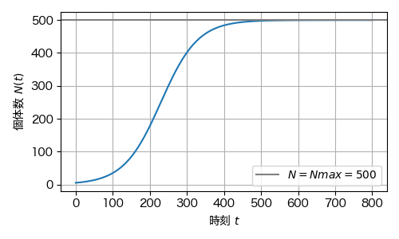
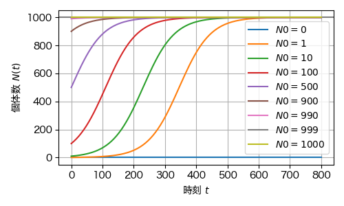
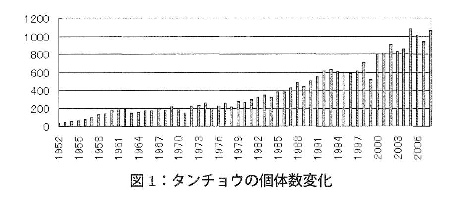

3. 生物学の事例#
到達目標
指数的増加と飽和効果をもつ成長モデルを理解する．
平衡点の解析を通じて安定性の概念を理解する．
キーワード
飽和効果
安定性
準備
anacondaを使用し，jupyter labを起動する．
Documents（書類）/mathematical_studiesフォルダをダブルクリックで開き+をクリックして新しいファイルを作成する．ファイル名を
3_{学籍番号}_{氏名}.ipynbに変更する．例：3_SI25999_香川渓一郎.ipynb
3.1. バクテリア増殖#
3.1.1. 実験的事実#
栄養が十分にある培地に1匹のバクテリアを入れると，一定時間ごとに分裂を繰り返して増殖する．
時間とともに個体数 \(N(t)\) が急速に増加し，最初は指数関数的に増加する．
しかし，資源の枯渇や老廃物の蓄積によって，最終的に増殖は飽和して一定値に近づく．
[1]より
[2]より
3.1.2. 指数的増加モデルの復習#
資源が無限にあると仮定した場合，時刻 \(t\) の個体数を \(N(t)\)，増殖率を \(r > 0\) として個体数の時間変化は次の式で表される．
初期時刻 \(t=0\) での個体数を \(N_0\) とすれば，この微分方程式の解は次のように指数関数で表される．
つまり，個体数は初期値から無限に増加していく． しかし現実には増殖の限界がある．
3.1.3. 飽和効果を考慮したモデル化#
個体数が大きくなると，栄養や空間が不足して増殖が抑制される．
増殖率が個体数の増加とともに減少すると考える．
例えば個体数が環境に収容できる上限の値 \(N_{\text{max}} > 0\) に届いたら増殖率を \(0\) にする．
この数理モデルをロジスティックモデルと呼び，微分方程式 (1) をロジスティック方程式と呼ぶ．
3.2. 微分方程式の性質#
3.2.1. 近似や極限を用いた解析#
微分方程式をそのまま解析する前に，特別な場合や極端な場合での解の挙動が直観に合っているかを確認する．
条件 |
近似・極限 |
微分方程式 |
結論 |
|---|---|---|---|
\(N \ll N_{\text{max}}\) |
\((1 - \frac{N}{N_{\text{max}}}) \approx 1\) |
\(\frac{dN}{dt} = rN\) |
指数関数的増加 |
\(N \to N_{\text{max}}\) |
\((1 - \frac{N}{N_{\text{max}}}) \to 0\) |
\(\frac{dN}{dt} = 0\) |
成長が止まる |
3.2.2. 微分方程式の解#
ロジスティック方程式
を変数分離して解く． 両辺を\(N\left(1 - \frac{N}{N_{\text{max}}}\right)\)で除し， \(\frac{1}{N\left(1 - \frac{N}{N_{\text{max}}}\right)}\)を部分分数分解すると
であるから，微分方程式は
これを時間に関して区間\((0,t)\)で積分すれば
従って
3.2.3. グラフのプロット#
準備
import numpy as np
import matplotlib.pyplot as plt
from matplotlib import rcParams
rcParams['font.family'] = 'Hiragino Sans'
変数設定
r = 0.02 # 成長率
Nmax = 1000 # 環境収容力
N0 = 10 # 初期個体数
プロット
t = np.linspace(0, 800, 200)
N = Nmax / (1 + ((Nmax - N0)/N0) * np.exp(-r * t))
fig, ax = plt.subplots(figsize=(5,3))
ax.plot(t, N)
ax.axhline(Nmax, color='gray', label=f"$N=Nmax={Nmax}$") # Nmaxのラインを描画
ax.set_xlabel(r"時刻 $t$")
ax.set_ylabel(r"個体数 $N(t)$")
ax.legend() # labelの表示
ax.grid(True) # 格子の表示
plt.tight_layout() # レイアウトを調整
fig.savefig("./3_logistic_growth.png")
plt.show()

ここで示した曲線をロジスティック曲線と呼ぶ．
Note
演習1
次のパラメタの下でロジスティック成長曲線を描け．ただし時刻は\(t=0\)から成長が停止したと思われる時刻までを自分で設定せよ．
r = 0.01Nmax = 500N0 = 5
rの値を2倍，Nmaxの値を半分にしたとき，成長曲線の形はどう変化するか．グラフを2つ重ねて描画して比較せよ．
3.2.4. 平衡点#
平衡点（steady state）：成長が止まる点，すなわち\(\frac{dN}{dt} = 0\)を満たす \(N=N_{\text{eq}}\)．
ロジスティック方程式 (1) の平衡点は
を満たす \(N\) であるから，
の2つである．
3.2.5. 平衡点の安定性解析#
微分方程式の平衡点は，安定性の観点から2種類に分類できる．
安定平衡点：そこから僅かにズレた値を初期値とすると，解は安定平衡点に限りなく近づく．
不安定平衡点：そこから僅かにズレた値を初期値とすると，解は不安定平衡点から離れていく．
平衡点の安定性を調べるには，微分方程式の右辺の符号を調べれば良い． 右辺を次のように\(f(N)\)と置く．
区間 |
\(f(N)\)の符号 |
(N(t)) の変化 |
|---|---|---|
\(N < 0\) |
\(f(N) > 0\) |
増加（モデル外） |
\(0 < N < N_{\text{max}}\) |
\(f(N) > 0\) |
\(N\)は増加 |
\(N_{\text{max}} < N\) |
\(f(N) < 0\) |
\(N\)は減少 |
→ 増減の方向を図で示すと，\(N=0\)からは離れる方向に\(N\)は変化し，\(N=N_{\text{max}}\)に近づく方向に\(N\)は変化することが分かる．
従って
\(N=0\)：不安定平衡点（少し増えると増殖へ）
\(N=N_{\text{max}}\)：安定平衡点（少し減らしても収束する．飽和状態）
3.2.6. グラフのプロット#
複数の値の初期値\(N_0\)についてロジスティック曲線をプロットし，曲線が \(N=0\) から離れ，\(N=N_{\text{max}}\) に漸近することを確認する．
変数の設定
r = 0.02 # 成長率
Nmax = 1000 # 環境収容力
N0_list = [0, 1, 10, 100, 500, 900, 990, 999, 1000]
グラフのプロット
t = np.linspace(0, 800, 200)
fig, ax = plt.subplots(figsize=(5,3))
ax.axhline(Nmax, color='gray') # Nmaxのラインを描画
for N0 in N0_list:
N = Nmax*N0 / (N0 + (Nmax - N0) * np.exp(-r * t))
# ax.plot(t, N, label=f"$N0={N0}$", color=cmap(norm(N0)))
ax.plot(t, N, label=f"$N0={N0}$")
ax.set_xlabel(r"時刻 $t$")
ax.set_ylabel(r"個体数 $N(t)$")
ax.legend() # labelの表示
ax.grid(True) # 格子の表示
plt.tight_layout() # レイアウトを調整
fig.savefig("./3_multi_logistic_growth.png")
plt.show()

Note
演習2
次のパラメタの下で，初期値\(N_0\)を複数の値でプロットし，平衡点 \(N=0\) と \(N=N_{\text{max}}\) の安定性を曲線の形から確認せよ，
r = 0.01Nmax = 500
3.3. タンチョウの個体数の変化をロジスティックモデルで説明する#

各年のデータ
data = dict()
data["year"] = [1952,1953,1954,1955,1956,1957,1958,1959,1960,1961,1962,1963,1964,1965,1966,1967,1968,1969,1970]
data["N"] = [33, 42, 52, 61, 76, 92, 125, 139, 172 ,175, 184, 147, 154, 172, 170, 200, 171, 212, 179]
3.4. まとめ#
項目 |
内容 |
|---|---|
モデル |
\(\displaystyle \frac{dN}{dt} = rN\left(1 - \frac{N}{N_{\text{max}}}\right)\) |
パラメタ |
\(r\)：成長率，\(N_{\text{max}}\)：環境収容力 |
平衡点 |
\(N=0\)（不安定），\(N=N_{\text{max}}\)（安定） |
解 |
\(\displaystyle N(t) = \frac{N_{\text{max}}}{1 + \left(\frac{N_{\text{max}} - N_0}{N_0}\right)e^{-rt}}\) |
振る舞い |
初期は指数関数的増加，後に飽和し，S字型曲線をなす． |
意義 |
生物集団の増殖・感染拡大・資源利用などの基本モデル |
3.4.1. 提出課題#
本日作成したipynbファイルをWebClassの「第3回課題」から提出せよ．
3.5. 参考文献#
[1] Liyang Xiong, Yuansheng Cao, Robert Cooper, Wouter-Jan Rappel, Jeff Hasty, Lev Tsimring, “Flower-like patterns in multi-species bacterial colonies,” eLife, 9 (2020) e48885.
[2] HHMI BioInteractive Video, “Bacterial Growth,” URL:https://www.biointeractive.org/classroom-resources/bacterial-growth （閲覧日：2025.10.15）
[3] 小寺隆幸, 数学で考える環境間題, 明治図書 (2004).
[4] 梅野善雄, “タンチョウの個体数変化とロジスティック曲線,” 数学教育学会誌, 50 (2009) 5–13. https://doi.org/10.34323/mesj.50.1-2_5.